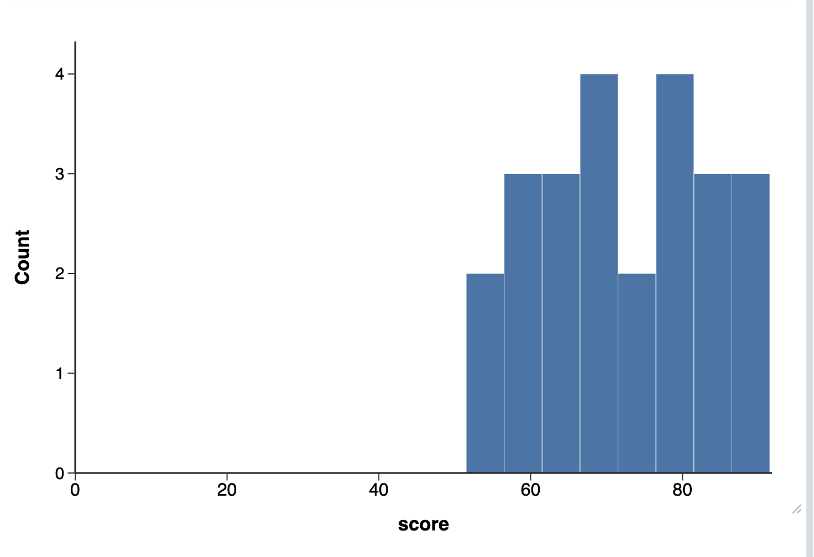
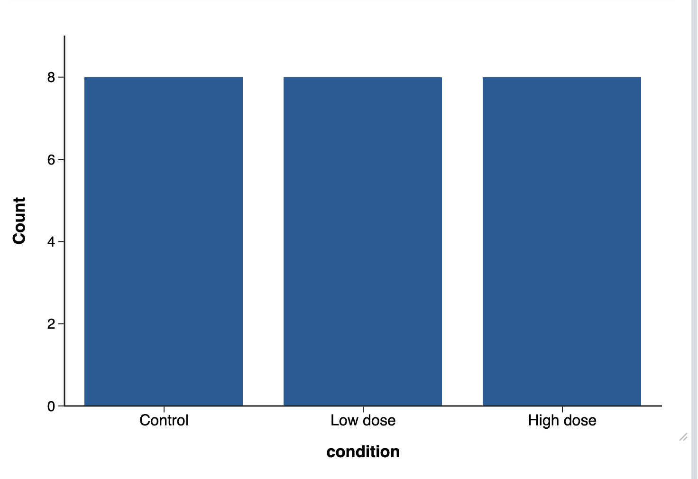
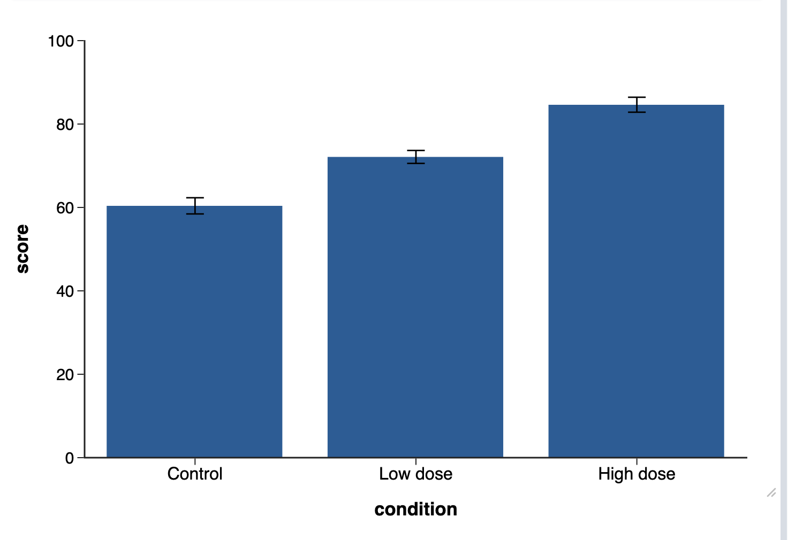
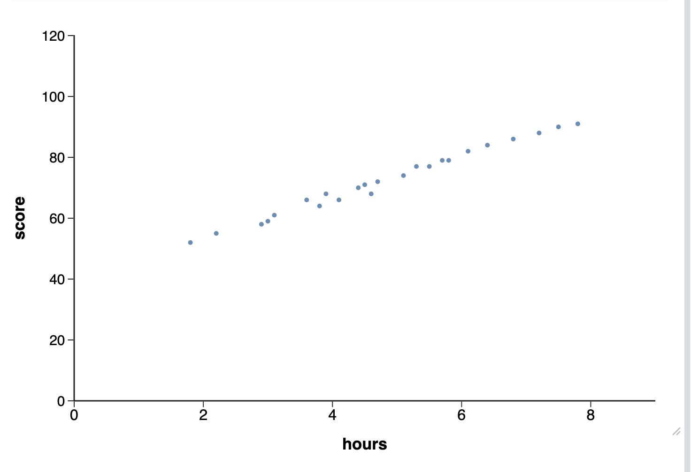
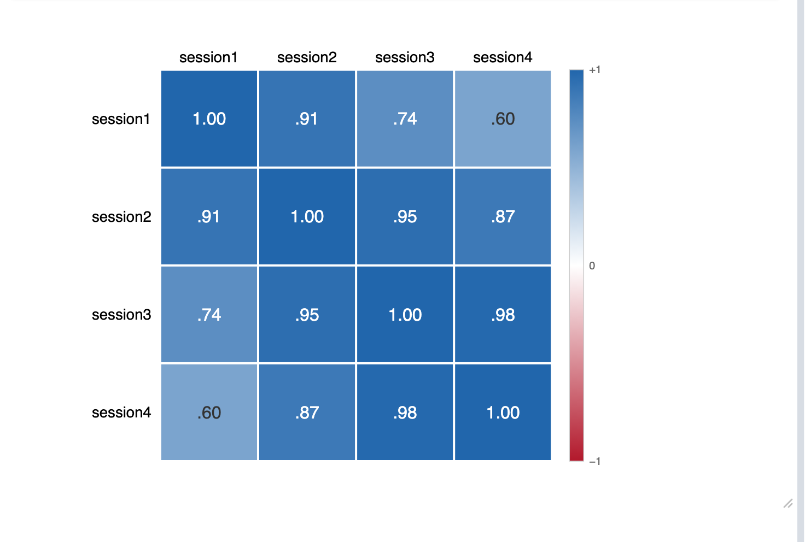
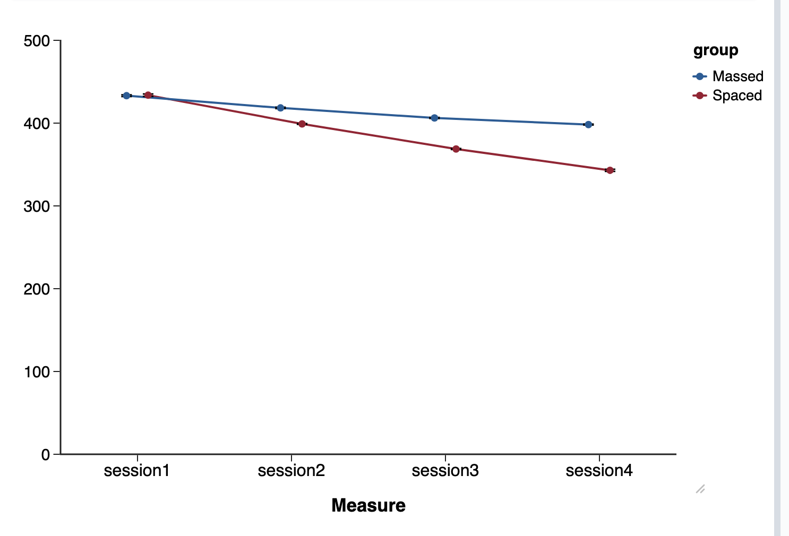
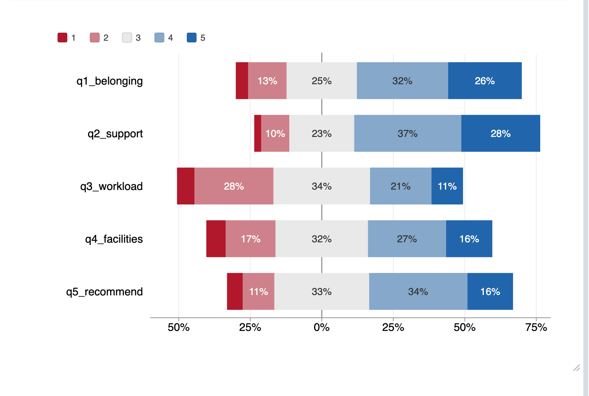
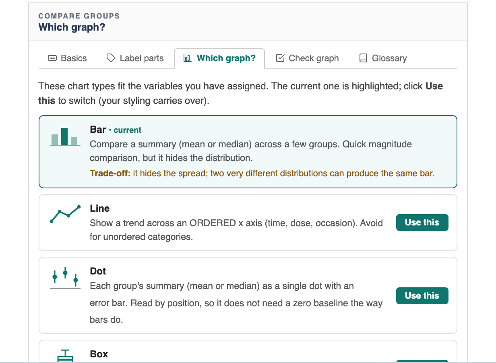

Pandion Plots
Pandion Plots
Learn · Choosing
Which chart for which data?
Pandion’s seven analyses cover the charts research data usually needs, and the right one follows from the shape of your data: how many columns are involved, and what kind. This tour uses the app’s built-in examples, so you can open any of them from the welcome screen and follow along. The same seven analyses live in the jamovi module; the toggle below adapts the directions to your platform.
1. Match the shape of your data
Seven shapes, seven analyses. Pick yours from the Analysis menu at the top of the Chart setup panel; every entry carries a one-line description of what it is for.

Seven shapes, seven analyses. Pick yours from the Pandion Plots menu on the Plots ribbon tab.

One numeric column: Distribution
A single measured variable (score alone) is a question about shape and spread. Distribution draws it as a histogram, density curve, box plot, violin, raincloud, Q-Q plot, or ECDF.

Categories you count: Frequencies
When the data is category labels and the question is how many of each, Frequencies counts them: bar, pie, donut, or pareto, as counts, percents, or proportions.

A numeric outcome across categories: Compare Groups
One numeric outcome, one categorical predictor: the classic experiment shape, and the one the getting-started guide builds. Bars, lines, dots, boxes, violins, or rainclouds.

Two numeric columns: Scatter
Two measured variables (hours and score) make a relationship question. Scatter plots the points and can add fit lines, confidence bands, ellipses, marginal distributions, and the correlation itself.

Several numeric columns: Correlation Matrix
With three or more numeric variables, pairwise scatter plots stop scaling. Correlation Matrix shows every pairwise r at once, as a heatmap, circles, numbers, or a mix.

The same people measured repeatedly: Repeated Measures
When the numeric columns are the SAME measurement taken again and again (sessions, timepoints), they are not separate variables: they are occasions. Repeated Measures connects them properly and corrects the error bars for the design. It gets its own guide.

Survey items on a shared scale: Likert / Survey
A battery of items answered on one response scale (1 to 5 agreement, say) is its own shape. Likert / Survey draws diverging or stacked response bars per item, or item means with confidence intervals.

2. When you are still unsure
Two helpers narrow it down from inside the app.
Once variables are assigned, the chart’s ? panel has a Which graph? tab: it lists the graph types that fit YOUR variables, highlights the current one, states each type’s honest trade-off, and switches instantly with Use this, styling intact.

The second helper is Help Me Choose, at the bottom of the module’s menu: a short question wizard that recommends an analysis, and can read the variables you drop in to explain which chart fits them and why.
The second helper is Help me choose, on the New chart dialog (the + beside the chart tabs): answer a few plain-language questions, or hand it the exact variables from your project, and it recommends the analysis that fits them and says why.
Next in the series: repeated measures, the one shape whose data layout genuinely trips people up. All the guides live on the Learn page.